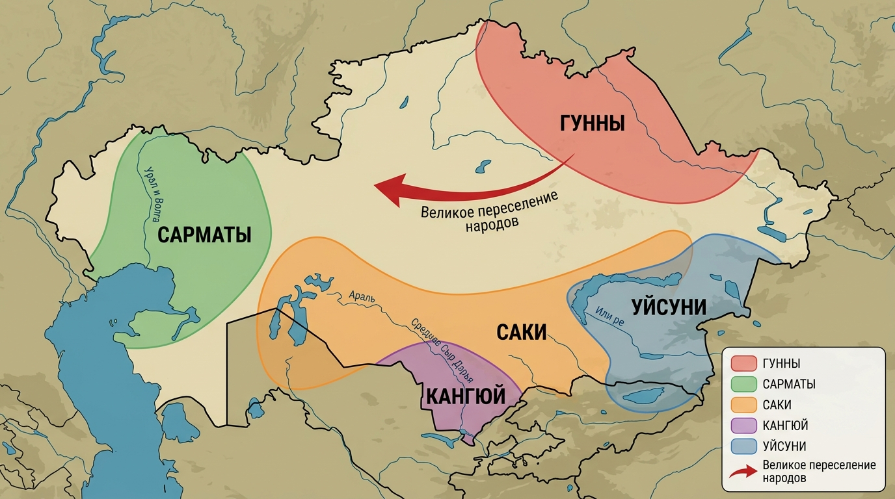
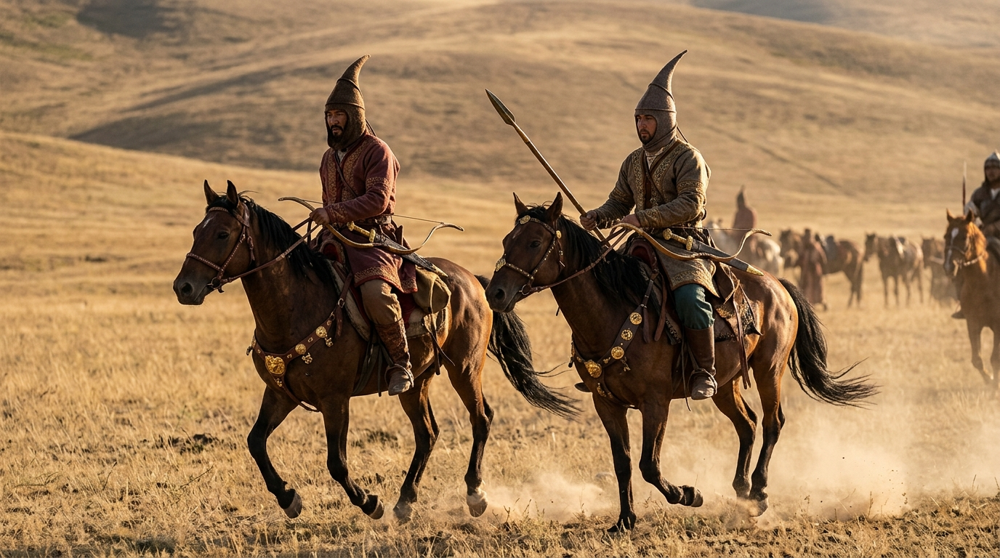
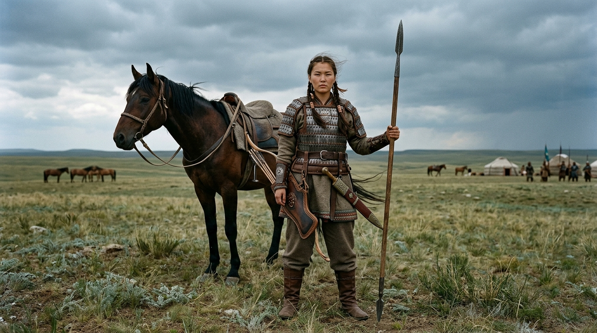
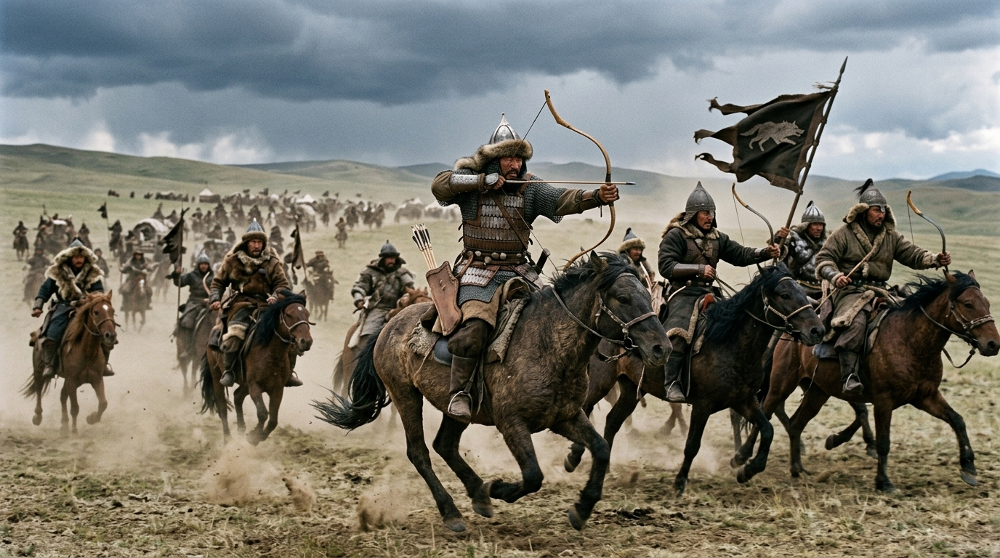
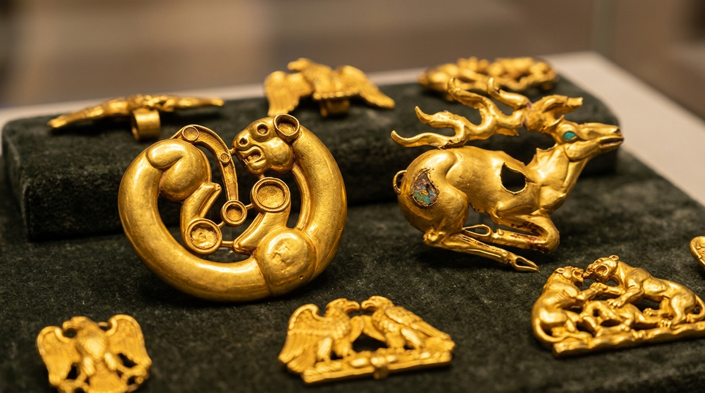
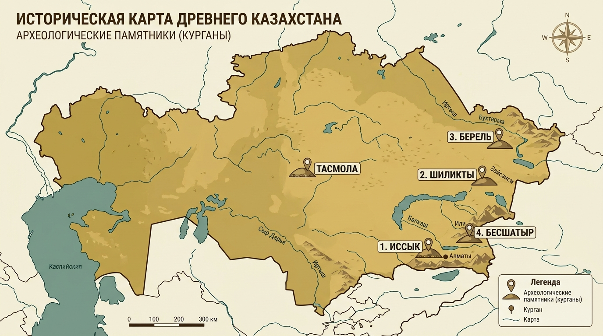
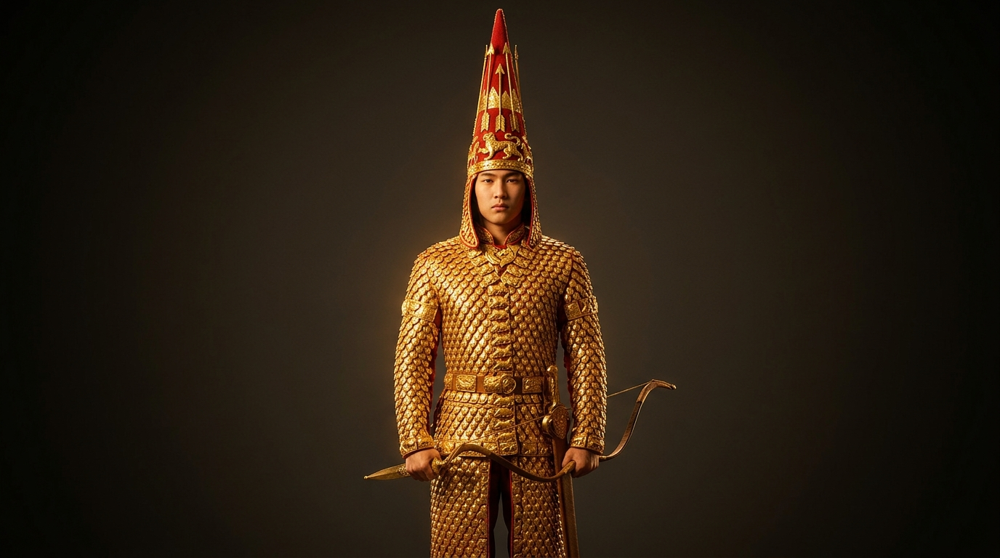

На рубеже II–I тысячелетий до н.э. в жизни степи произошёл переворот. Оседло-земледельческое хозяйство андроновцев уступило место кочевому скотоводству. Главной причиной стало изменение климата: степь становилась суше, влаги для земледелия и постоянных пастбищ не хватало. Единственным способом прокормить крупные стада стал перегон скота по сезонным пастбищам — весенним, летним (жайляу), осенним и зимним (кыстау). Так сложилась кочевая цивилизация, определившая всю дальнейшую историю Казахстана.
Вторым фактором стало освоение железа. Наступил железный век (начало I тыс. до н.э.): железные орудия были прочнее и дешевле бронзовых, а железное оружие сделало кочевников грозной военной силой. Именно на стыке этих двух процессов — кочевого скотоводства и металлургии железа — возникла эпоха ранних кочевников (VIII в. до н.э. – V в. н.э.). К ней относятся саки, сарматы, уйсуни, кангюй и гунны.

Саки — крупнейшее объединение кочевых племён на территории Казахстана и Средней Азии. Разные народы называли их по-своему: персы — «саками» (в надписях царя Дария), древние греки — «азиатскими скифами», китайцы — «сэ». Сведения о саках сохранились в трудах Геродота, в персидских клинописных надписях (Бехистунская надпись) и в китайских источниках.
Саки делились на несколько крупных групп, и их названия — частый вопрос на ЕНТ:
Общество саков делилось на три группы: воины, жрецы и общинники (пастухи и земледельцы). Каждой соответствовал свой цвет — красный у воинов, белый у жрецов, жёлтый и синий у общинников. Во главе стоял царь, которого избирали из воинов; власть его считалась данной богами. Важной чертой была высокая роль женщины: женщины могли править, участвовать в битвах и советах.
Саки прославились борьбой с могущественными державами древности. В 530 г. до н.э. царица массагетов (сакских племён) Томирис разгромила войско персидского царя Кира II, который погиб в этом сражении. В 519 г. до н.э. персидский царь Дарий I вторгся в сакские земли, но пастух Ширак, изранив себя, обманом завёл персидское войско в безводную пустыню, погубив его ценой собственной жизни. Саки также воевали в составе персидской армии и участвовали в походах Александра Македонского, который в 329 г. до н.э. дошёл до Сырдарьи, но покорить саков не смог. Известна и сакская царица Зарина.

Сарматы (раннее название — савроматы) занимали Западный Казахстан, степи между Волгой, Уралом и Доном. Основой хозяйства было кочевое скотоводство, важную роль играла обработка железа и коневодство. Геродот передавал легенду, что савроматы произошли от браков скифов с воинственными амазонками, — и это не случайно: у сарматов долго сохранялись сильные пережитки матриархата. Женщины владели оружием, участвовали в войнах, а иногда и возглавляли племена; в женских погребениях находят мечи, кинжалы и наконечники стрел. В первые века нашей эры сарматы были грозной силой, тревожившей границы Римской империи.

После саков господство в Семиречье перешло к уйсуням. Их государственное объединение располагалось в долине реки Или и в районе Иссык-Куля. Столицей был город Чигучен — «город Красной долины» — на берегу Иссык-Куля. Правитель уйсуней носил титул гуньмо (кунбаг). Основные сведения об уйсунях сохранили китайские источники, поскольку уйсуни поддерживали дипломатические связи с ханьским Китаем.
Уйсуни вели полукочевое хозяйство: наряду со скотоводством занимались земледелием, знали ремёсла и обработку металлов. Их земли лежали на трассе Великого Шёлкового пути, что делало уйсуней активными участниками международной торговли. Общество уже знало имущественное и социальное неравенство, существовала частная собственность на скот и землю.
Кангюй — государственное объединение на юге Казахстана, в среднем течении Сырдарьи, с центром в районе Отрарского оазиса. Кангюй контролировал ключевые участки Великого Шёлкового пути и брал под защиту (и под пошлину) торговые караваны, идущие из Китая на запад. Это приносило государству большое богатство.
Кангюйцы вели скотоводческо-земледельческое хозяйство, строили города и укрепления, развивали ремёсла. Важные признаки высокого уровня развития: кангюй имел собственную письменность и чеканил монеты. Общество делилось на знать, свободных общинников и рабов. Сведения о кангюе также содержатся преимущественно в китайских хрониках.
Гунны (в китайских источниках — хунну) — кочевой народ, сложившийся в Центральной Азии, к северу от Китая. В 209 году до н.э. вождь Модэ-шаньюй объединил разрозненные гуннские племена и создал первое мощное кочевое государство с дисциплинированной армией, разделённой по десятичной системе (десятки, сотни, тысячи, тумены). Гунны вели долгие войны с ханьским Китаем; именно от гуннских набегов китайцы начали строить Великую Китайскую стену.
Под давлением Китая и внутренних раздоров часть гуннов в первые века н.э. начала движение на запад. Пройдя через земли Казахстана, они увлекли за собой другие племена — так началось Великое переселение народов (II–V вв. н.э.), грандиозная миграция, изменившая этническую карту Евразии и ускорившая падение Западной Римской империи. Вершиной могущества гуннов в Европе стало правление вождя Аттилы (V в. н.э.), создавшего огромную державу от Волги до Рейна и наводившего ужас на Рим. Историческое значение гуннов огромно: они соединили Азию и Европу и стали одними из предков тюркских народов.

Ранние кочевники создали яркую самобытную культуру, вершиной которой стал «звериный стиль» в искусстве. Оружие, конскую упряжь, украшения и посуду оформляли изображениями животных — оленей, горных козлов, барсов, тигров, орлов, коней, а также фантастических существ (грифонов). Животные изображались в динамичных позах: свернувшийся барс, олень с подогнутыми ногами, сцены борьбы хищника и жертвы. Это было не просто украшение, а отражение мировоззрения кочевника, его связи с силами природы и веры в покровительство животных-тотемов.
Кочевники верили в загробную жизнь, поэтому знатных людей хоронили в больших курганах вместе с оружием, украшениями, конями и утварью. Они поклонялись Солнцу, небу, огню и силам природы, почитали предков. В антропологическом облике ранних кочевников преобладал европеоидный тип с постепенным нарастанием монголоидных черт к концу эпохи.

Материальную культуру ранних кочевников изучают по знаменитым курганам. Их названия обязательно нужно знать:


По археологическим памятникам сарматов, уйсуней и кангюев учёные восстанавливают их хозяйство, верования и связи с другими цивилизациями. Культура ранних кочевников — важнейший вклад народов Казахстана в мировую цивилизацию.